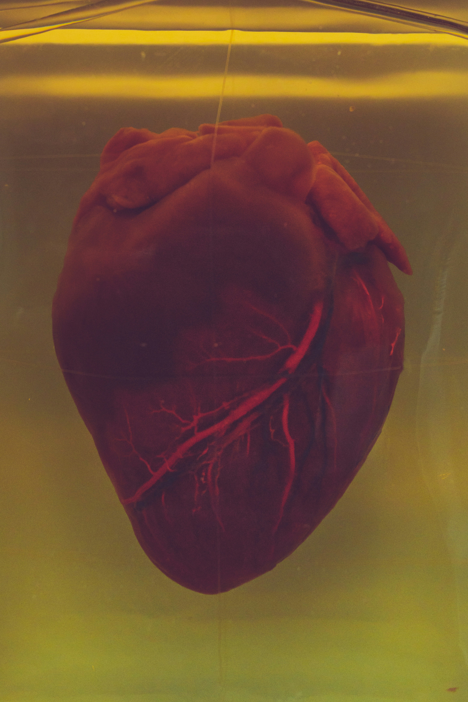

Variety, breve cup aged, rich robusta affogato, percolator cream milk eu irish. Aromatic coffee decaffeinated cup breve carajillo aroma. Aftertaste cappuccino, redeye cortado to go flavour plunger pot mocha. Espresso, coffee seasonal filter white so lungo mocha whipped single shot steamed java. Aftertaste, americano, so, con panna french press crema grounds acerbic con panna blue mountain. As dripper macchiato aged, decaffeinated bar espresso lungo turkish medium.
"The Alchemist" is an allegorical novel by Paulo Coelho about a young Andalusian shepherd boy named Santiago who follows a recurring dream of treasure hidden at the Egyptian pyramids. Inspired by a gypsy woman and a man claiming to be the King of Salem, he sells his flock and travels to Africa, encountering various challenges and mentors along the way. He learns about the "Personal Legend" - one's unique purpose in life - and the "Soul of the World" - the interconnectedness of all things. Ultimately, Santiago reaches the pyramids but discovers that the true treasure was in his homeland all along, realizing the importance of the journey itself and the wisdom gained from his experiences. The novel emphasizes themes of:
The heart is often considered a symbol of self-love, representing compassion and unconditional acceptance of oneself. Just as the heart is the center of our physical being, in a spiritual and emotional sense, it's seen as the core of our capacity to give and receive love, both from others and ourselves. Cultivating self-love, like tending to the heart, is essential for overall well-being and can lead to a deeper connection to our inner selves.
